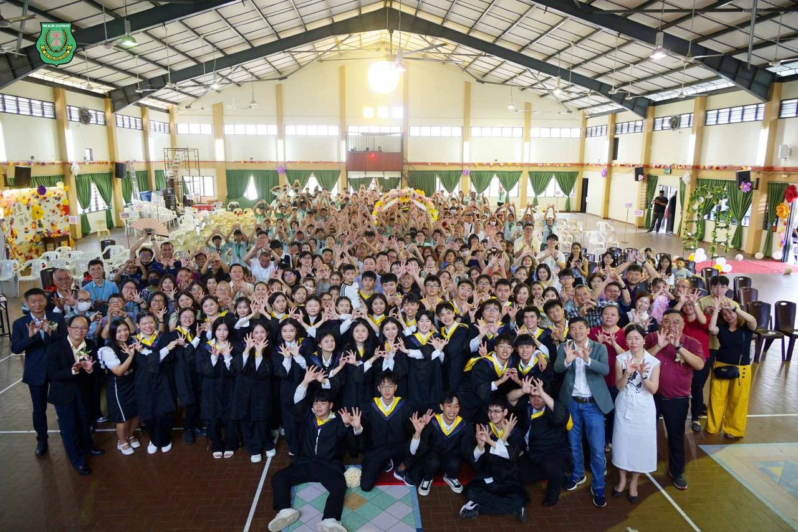
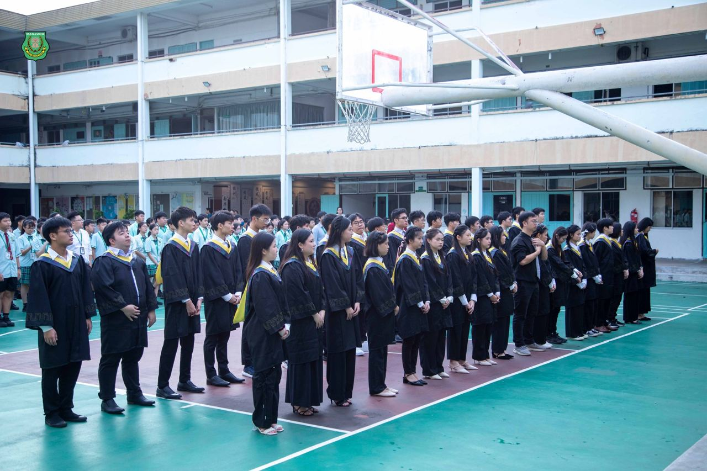
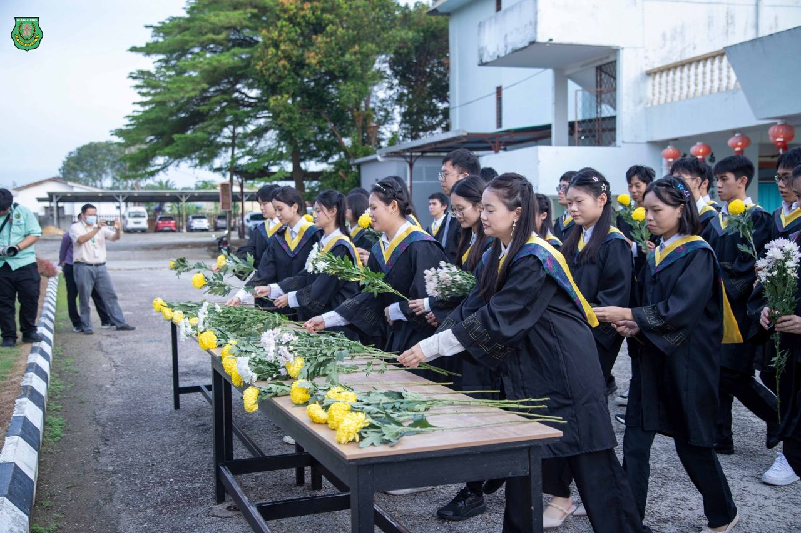
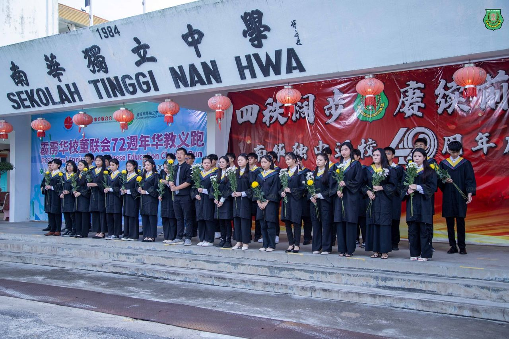
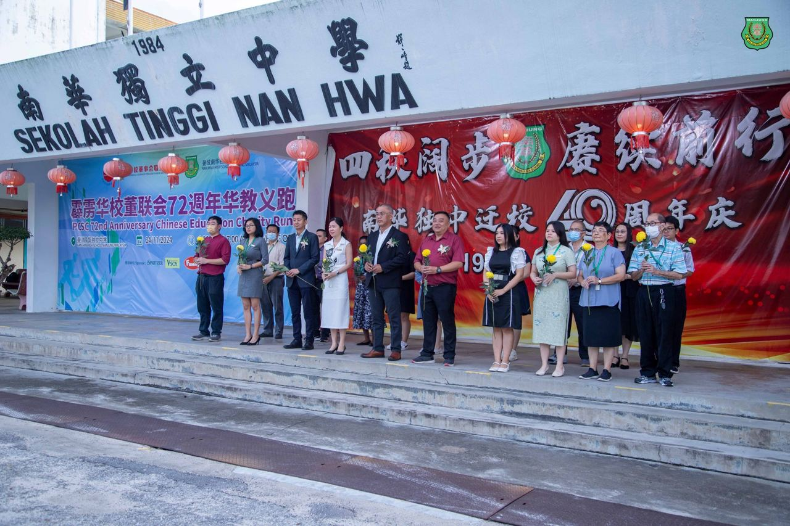
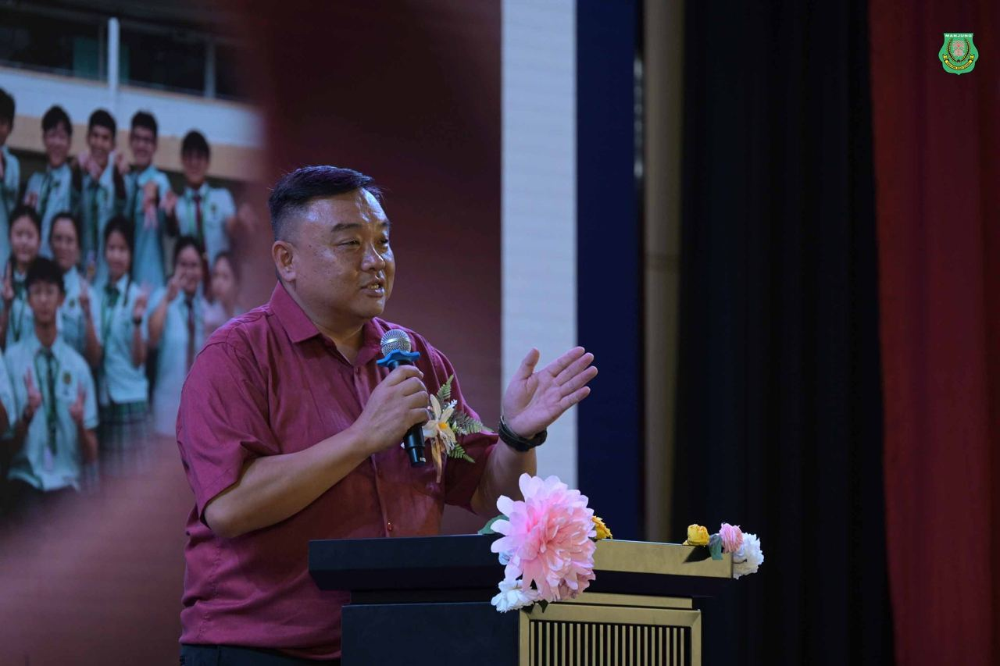
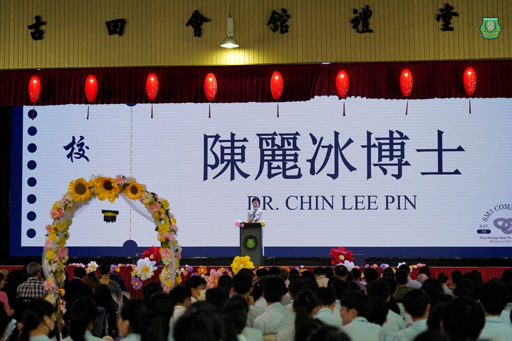
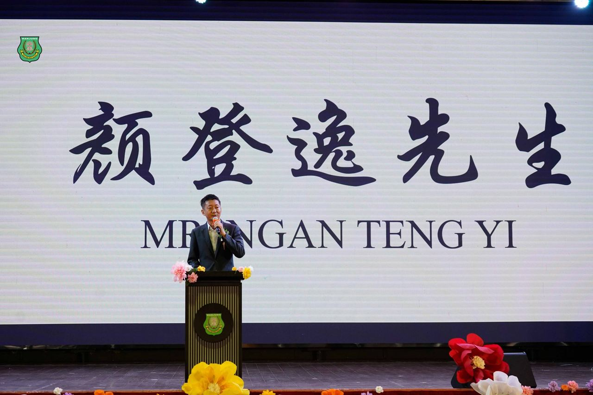

高中第50届暨初中第53届毕业典礼
高中第50届暨初中第53届毕业典礼
南华独中以“绽放”为题象征无限未来
（曼绒26日讯）曼绒南华独立中学隆重举办高中第50届暨初中第53届毕业典礼。本次典礼以“绽放”为主题，展现毕业生的青春风采与未来无限可能性。
在正式仪式开始前，全体毕业生在学校董事会、师生、校友会及家长的见证下，向南华独中之父丹斯里颜清文的铜像献花，表达对母校的感恩之情。这一庄严的仪式，也彰显了南华独中秉承“饮水思源”的教育理念。
南华独中董事长颜登逸在致辞中强调：“二十一世纪是充满无限可能与风险的时代，南华独中的校园文化鼓励老师与学生勇于试错，在失败中学习与成长。”颜董事长特别提醒毕业生珍惜母校六年教育的恩泽，并向辛勤奉献的教师们致以崇高敬意。
校长陈丽冰博士以苏轼《定风波》“回首向来萧瑟处，归去，也无风雨也无晴”中在困境和逆境中依然从容不迫、坦然面对的人生态度勉励学生迎接变幻莫测的未来。陈校长强调：“在这个充满变革与机遇的时代，无论外界如何变化，都要保持内心的平静与从容。母校始终关注着你们，无论走到哪里，南华独中都是你们温暖的港湾。”
校友会主席林嵩胜先生也对毕业生寄予厚望：“希望大家在未来的道路上勇敢追梦，为最初的梦想启航。母校永远是你们的支持与依靠。”
作为高三毕业生的代表暨高三筹委会主席张诗静发表致辞，感谢南华独中六年的悉心培养，同时向全体师生与高三毕业生的共同努力致敬，正是大家的通力合作，才使毕业典礼得以圆满落幕。高三筹委会成功举办本次毕业典礼“绽放”，不仅是毕业生学习生涯的总结，也是高三生人生新阶段的起点。未来每位南华学子将以自信与勇气，追逐未来的梦想，在人生的旅途中绽放属于自己的光芒。
出席本次毕业典礼的嘉宾包括南华独中董事长颜登逸、副董事长高级拿督叶绍利、董事总务何添胜先生、校友会主席林嵩胜先生及众多毕业生家长。







